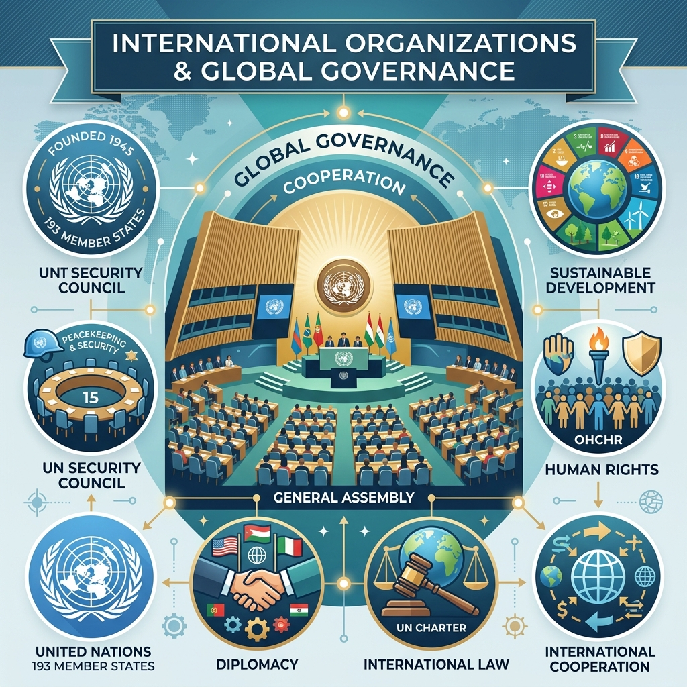

← Back to Intl Appointments & Orgs Main Page
UN Framework, IMF/World Bank Quotas, & NATO Structures
International Organizations form a major syllabus area for BPSC Prelims. Having a deep, static-structural understanding of voting power and historical backgrounds is vital.

UN General Assembly structure: Sovereignty, International Law, and Global Cooperation.
1. United Nations Charter & Security Council (STATICS)
The United Nations was established on **October 24, 1945**, following the **San Francisco Conference** where 50 countries signed the UN Charter. October 24 is celebrated annually as UN Day.
The Security Council (UNSC):
- Composition: 15 member states. 5 permanent members (P5: US, UK, France, China, Russia) with veto power, and 10 non-permanent members elected for 2-year terms by the General Assembly.
- Veto Rules: Decisions on substantive matters require an affirmative vote of 9 members, including the concurring votes of all P5 members. A veto from any P5 member blocks the resolution.
2. Bretton Woods Institutions: IMF and World Bank (STATICS)
Both the International Monetary Fund (IMF) and the World Bank Group (IBRD & IDA) were created at the **Bretton Woods Conference in July 1944** to rebuild the post-war global economy.
A. International Monetary Fund (IMF)
- Voting Power: Unlike the UN General Assembly where each country has one vote, voting power in the IMF is directly linked to a member's **quota**. Quotas are based on economic size, openness, and reserves.
- SDR (Special Drawing Rights): A basket of five currencies: US Dollar, Euro, Chinese Renminbi, Japanese Yen, British Pound.
B. World Bank Group
- Consists of 5 institutions, most notably the **International Bank for Reconstruction and Development (IBRD)** (loans to middle-income countries) and the **International Development Association (IDA)** (interest-free grants/credits to poorest nations).
3. Current Ongoing Relevance (2025-2026)
- UNSC Palestine Vote: In April 2024, the United States vetoed a Security Council resolution recommending full UN membership for Palestine. The final vote was 12 in favor, 1 veto (US), and 2 abstentions (UK and Switzerland). BPSC specifically tests these exact voting distributions.
- NATO Expansion: Sweden officially became the **32nd member state of NATO** in March 2024, following Finland's accession in April 2023. Belarus became the **10th member state of SCO** in July 2024.
← Back to Intl Appointments & Orgs Main Page